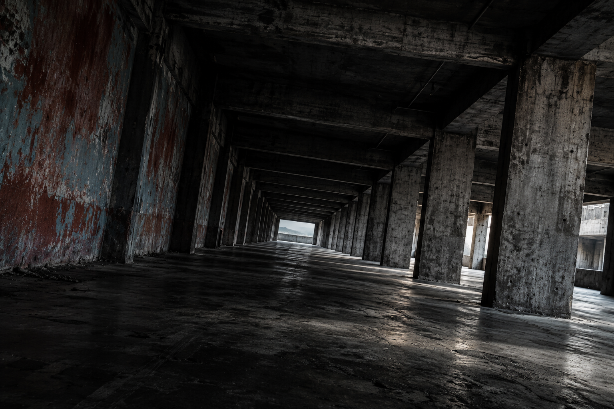

MOTION DESIGNER · CREATIVE DEVELOPER
让界面
学会回答。
屏幕上每一次位移，都在告诉用户刚刚发生了什么。现在他
在哪。我做的就是这件事，做了六年。
36 亲手拆项目 48 个交互细节 89 场景探索 11 眼光

MOTION DESIGNER · CREATIVE DEVELOPER
屏幕上每一次位移，都在告诉用户刚刚发生了什么。现在他
在哪。我做的就是这件事，做了六年。
36 亲手拆项目 48 个交互细节 89 场景探索 11 眼光
暗色建筑与静态波形 · 等待回应
六条代码波形、独立照片与文字；按钮、幅度和笔记为本地补写，没有录音或音频接口。